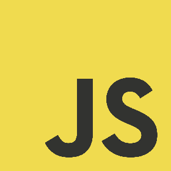

A Node.js module and command line tool to load variables from different environments and export production configuration to Heroku.
A Node.js full stack prototype to start a new Node.js API RESTful faster. Node and Express best practices, security and DevOps (CI, CD) concerns.
Continuous integration and delivery using npm as build tool and browserify. Live reload and HMR supported. Only one file configuration : package.json. This version builds JavaScript with Browserify and Babel (ES6/7), CSS with Stylus and autoprefixer, HTML with Pug. Tests are run through Mocha with eslint (airbnb configuration). Deployments are made for Git, Heroku and Amazon S3.
A synchronous version Node.js module to verify if a path exists, is a file or a directory since depecrated the existsSync from fs middleware is.
A simple Node.js command line tool to inject or extract the live-reload script element depending on production or development need.

A native JavaScript library to do Ajax and make it simple when JavaScript can be repetitive and exhaustive.
A native CSS library with components and a grid system written with Stylus.